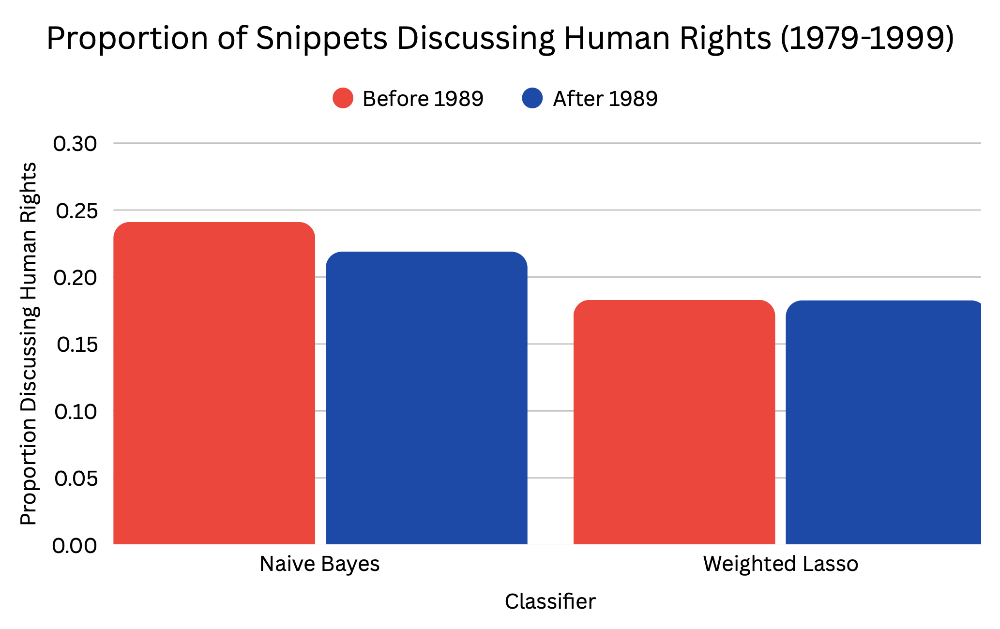

My research question was “Did the proportion of UN General Debate snippets that discuss individual-level human rights change in the decade after the fall of the Berlin Wall (1990–1999) compared to the decade before (1979–1988)?” This historic event marked the post-Cold War shift and propelled countries such as Yugoslavia to fight for independence and speak against genocide and crimes against humanity (Council on Foreign Relations). There has been research conducted on this topic from a historian’s perspective, but not much there is not as much scientific evidence. Around this time was also the end of Apartheid amongst other forms of discrimination around the world, so it could be inferred that more countries would be speaking in favor of equality for everyone. Vienna also hosted the first ever World Conference on Human Rights in 1993 which resulted in the creation of the “post of the High Commissioner for Human Rights,” (UN Press). These all support the reasoning why there could have been an increase in discussion of Human Rights after 1989.
I referenced the official United Nations Universal Declaration of Human Rights to get a concrete idea of how to formulate my definition. The Declaration starts by stating that “all human beings are born free and equal,” (United Nations). It continues with thirty articles describing different situations and rights everyone should be entitled to. Once I had a solid basis for my Human Rights definition, I was ready to hand code.
To answer my research question, I had to split my data into two time periods and decide whether the snippets were discussing human rights or not. To give myself enough data, I chose to focus on the ten years before and after 1989 which was the year the Berlin Wall fell. I decided not to include 1989 in my data because the UN general debate was right around the same time. Then, to assess the text snippets, I used my definition defined in the codebook below.
| Category | Description | Example | Codes |
|---|---|---|---|
| Discusses Human Rights | Human Rights is mentioned either explicitly with words such as “human rights,” “freedom of,” or “discrimination of,” or explicitly discussing discriminatory events such as genocide, Apartheid. In the context of these words, the text must be reflecting individuals suffering rather than generalizing it to an entire country. For example, discussing “self-determination” of a country or independence is not described in the UN Declaration of Independence and therefore does not fit the definition of “discussing Human Rights” | “The constant attacks on the humanity of the Mack peoples of southern Africa by Pretoria's racist regime and its continued occupation of Namibia and harassment of neighbouring African States are affronts to civilized conscience. We record our condemnation of the apartheid policies of the racist regime of South Africa, and our support for the right of the black majority in southern Africa to determine the governance of their territory.”This discusses Apartheid which was discrimination of individuals and limited their human rights, so this would constitute as discussing Human Rights. | 0: Human Rights is not mentioned 1: Human Rights is mentioned |
| Before or after the fall of the Berlin Wall | My independent variable to assess if the discussion of Human Rights has changed after a historic event. |
For the hand coding, I originally split my speeches into 750 character snippets which gave me over 95,000 observations of data. Then I selected 200 random documents, but this posed a few different issues. Firstly, the speeches did not successfully split into paragraphs for all the documents after 1989. Instead, those documents kept their entire length. This meant that those documents had a higher chance of discussing human rights because there was more text. Secondly, when I randomly sampled out of all my documents, I ended up with 188 documents being from before 1989. This is bad for the validity of my testing because the evidence before 1989 will have a lot more documents to compare versus after 1989.
After I realized my hand coding setup mistakes, I went back and fixed how I split my documents, and I ended up having to split it after a certain number of characters as opposed to cutting them by paragraphs. When I was sampling, I randomly sampled 100 documents before and after 1989 for a total of 200 documents and re-coded the new snippets with my parents.
Our Krippendorff's Alpha was 0.571 which is not great, but there is some agreement. The best intercoder reliability was between my mom and dad who had a Krippendorff’s alpha of 0.647, agreeing on 170 out of 200 snippets. Meanwhile, the worst intercoder reliability was between my dad and myself with a Krippendorff’s alpha of 0.495. We agreed on 162 snippets, but there were 33 instances where I believed the snippet did not discuss human rights while my dad thought it did.
The root cause of the differences was establishing if terms like “independence” and “self-determination” of countries were considered as human rights. After consulting the UN Declaration of Human Rights, where it did not discuss human rights on a country-level, I refined my definition to be more focused on individuals. This would hopefully increase our intercoder reliability by reducing the number of snippets mentioning a country’s push for self-determination to be considered as human rights. I also clarified that genocides and mass-discrimination are considered Human Rights violations.
My goal was to categorize each text into either discussing human rights so it made sense to use the Naive Bayes classifier. I did not have a second measurement like sentiment which made it easier to classify. Any discussion of human rights, whether positive or negative, would be labeled as “discussing human rights.” The Naive Bayes classifier is also good because it doesn’t need a large training set in order to perform well. I also used the Lasso method to compare the results on the training set.
Both methods provided similar results on precision and recall with the Weighted Lasso doing a little bit better. The lasso recall was 52.94% which means that they missed about 48% of human rights mentions. The 69% precision means that they correctly assumed 69% percent of the documents as being “discussions of human rights” and the rest of them were false positives.
Once I created and assessed the classifiers within my sample, I applied both the Naive Bayes and Weighted Lasso to my full corpus to see if I would get different answers My data is as follows:

From these results, they show that there was no difference in how much human rights was discussed before and after the fall of the Berlin Wall. While this surprised me at first, I realized that the end of the Cold-War brought up many new discussions and smaller countries that were fighting for their freedoms may have been drowned out by powerful nations discussing issues such as the economy. The statistics before and after were so similar that it is possible my methods of data analysis went wrong at some point. I would be curious to sample 200 new snippets and compare those results. I wanted to justify my classifiers by taking a look at the top words associated with human rights and not. The results were not as I expected and I got words such as “internat”, “destruct”, “jamahiriya”, and “women” as being the top words associated with “human rights. ” While it is possible that these relate to human rights in context, I was surprised that I did not see "human " or "rights" as the top words being associated with my research question. This makes me doubt the validity of my tests and I would have to do further investigations as to why these are the top words.
The main limitation of this approach is that I am only sampling 200 of the 95,000 observations. This is about 0.21% of the total data, so getting another random sample of 200 snippets could give me very different results. I would also be interested to see how an LLM would do with this topic. Given that there is a whole document outlining what Human Rights is according to the United Nations, I would not be surprised if it performed better than classifiers.
This project was a big learning curve from the moment I had to choose a topic to research. It was hard to find something specific that I would also expect to get significant results. I wish I had done a few things differently, like creating a solid research question earlier so I could have started the coding sooner. This would have allowed me the time to try out the LLM and see if it gave me better results. I am still not totally convinced by my results and would like to do further testing into it.
After the Berlin Wall: Europe's Struggle to Overcome its Divisions
Human Rights and Democratization in Unified Germany
Human Rights Before and After the Fall of the Berlin Wall